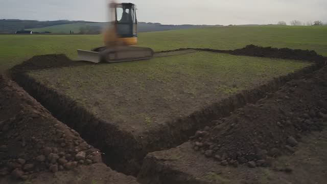
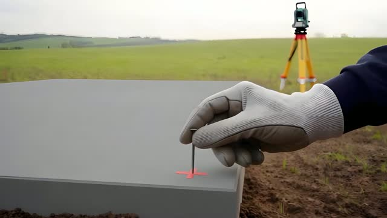

Geodet · Nitra a okolie
Rohy domu tam, kde ich kreslí projekt.
Geodet vyznačí v teréne rohy, osi a výškový bod stavby. Po vykopaní základov vytýčí múry znova.
- Rohy, osi a výškový bod stavby.
- Protokol o vytýčení.
- Po výkope základov nové vytýčenie múrov, klincom do betónu.
Cenu poznáte vopred. Ozveme sa do 24 hodín. Telefón berieme aj v teréne a aj cez víkend.


